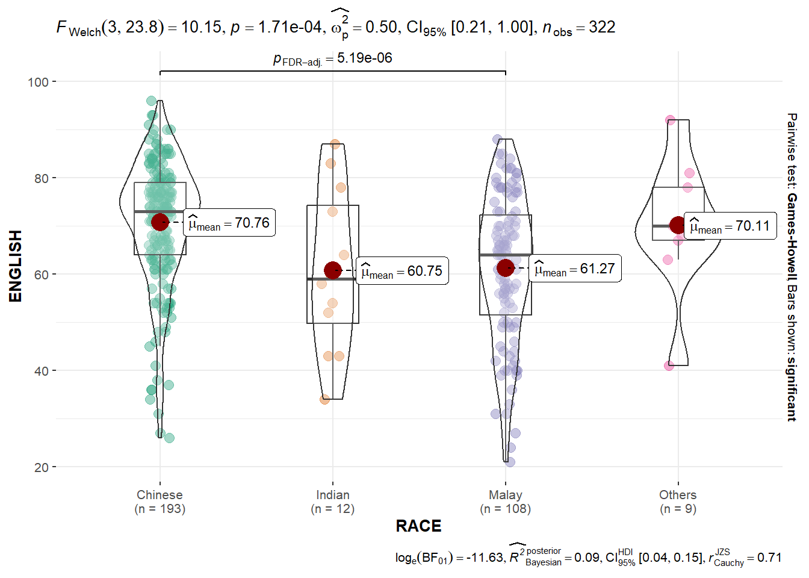

Learning Outcome
In this hands-on exercise, you will gain hands-on experience on using:
- ggstatsplot package to create visual graphics with rich statistical information,
- performance package to visualise model diagnostics, and
- parameters package to visualise model parameters
1. Getting started
The main R package used in this section is ggstatsplot.
Rows: 322 Columns: 7
── Column specification ────────────────────────────────────────────────────────
Delimiter: ","
chr (4): ID, CLASS, GENDER, RACE
dbl (3): ENGLISH, MATHS, SCIENCE
ℹ Use `spec()` to retrieve the full column specification for this data.
ℹ Specify the column types or set `show_col_types = FALSE` to quiet this message.2. Examples of adding statistical information in the chart
2.1 One-sample test: gghistostats()
Show the code: One-sample test(gghistostats)

Unpacking the Bayes Factor:
In this hands-on exercise, you will gain hands-on experience on using:
- ggstatsplot package to create visual graphics with rich statistical information,
- performance package to visualise model diagnostics, and
- parameters package to visualise model parameters
How to interpret Bayes Factor:
A Bayes Factor can be any positive number. One of the most common interpretations is this one—first proposed by Harold Jeffereys (1961) and slightly modified by Lee and Wagenmakers in 2013.
2.2 Two-sample mean test: ggbetweenstats()

2.3 Oneway ANOVA Test: ggbetweenstats()
Show the code: Oneway ANOVA Test(ggbetweenstats)

Note
- “ns” → only non-significant
- “s” → only significant
- “all” → everything
2.4 Significant Test of Correlation: ggscatterstats()

2.5 Significant Test of Association (Depedence) : ggbarstats

3. Visualising Models
3.1 Getting started
# A tibble: 1,436 × 38
Id Model Price Age_08_04 Mfg_Month Mfg_Year KM Quarterly_Tax Weight
<dbl> <chr> <dbl> <dbl> <dbl> <dbl> <dbl> <dbl> <dbl>
1 81 TOYOTA … 18950 25 8 2002 20019 100 1180
2 1 TOYOTA … 13500 23 10 2002 46986 210 1165
3 2 TOYOTA … 13750 23 10 2002 72937 210 1165
4 3 TOYOTA… 13950 24 9 2002 41711 210 1165
5 4 TOYOTA … 14950 26 7 2002 48000 210 1165
6 5 TOYOTA … 13750 30 3 2002 38500 210 1170
7 6 TOYOTA … 12950 32 1 2002 61000 210 1170
8 7 TOYOTA… 16900 27 6 2002 94612 210 1245
9 8 TOYOTA … 18600 30 3 2002 75889 210 1245
10 44 TOYOTA … 16950 27 6 2002 110404 234 1255
# ℹ 1,426 more rows
# ℹ 29 more variables: Guarantee_Period <dbl>, HP_Bin <chr>, CC_bin <chr>,
# Doors <dbl>, Gears <dbl>, Cylinders <dbl>, Fuel_Type <chr>, Color <chr>,
# Met_Color <dbl>, Automatic <dbl>, Mfr_Guarantee <dbl>,
# BOVAG_Guarantee <dbl>, ABS <dbl>, Airbag_1 <dbl>, Airbag_2 <dbl>,
# Airco <dbl>, Automatic_airco <dbl>, Boardcomputer <dbl>, CD_Player <dbl>,
# Central_Lock <dbl>, Powered_Windows <dbl>, Power_Steering <dbl>, …Notice that the output object car_resale is a tibble data frame.
3.2 Build models
Show the code: Multiple Regression Model
Call:
lm(formula = Price ~ Age_08_04 + Mfg_Year + KM + Weight + Guarantee_Period,
data = car_resale)
Coefficients:
(Intercept) Age_08_04 Mfg_Year KM
-2.637e+06 -1.409e+01 1.315e+03 -2.323e-02
Weight Guarantee_Period
1.903e+01 2.770e+01 # Check for Multicollinearity
Low Correlation
Term VIF VIF 95% CI Increased SE Tolerance Tolerance 95% CI
KM 1.46 [ 1.37, 1.57] 1.21 0.68 [0.64, 0.73]
Weight 1.41 [ 1.32, 1.51] 1.19 0.71 [0.66, 0.76]
Guarantee_Period 1.04 [ 1.01, 1.17] 1.02 0.97 [0.86, 0.99]
High Correlation
Term VIF VIF 95% CI Increased SE Tolerance Tolerance 95% CI
Age_08_04 31.07 [28.08, 34.38] 5.57 0.03 [0.03, 0.04]
Mfg_Year 31.16 [28.16, 34.48] 5.58 0.03 [0.03, 0.04]Show the code: Model Diagnostic: checking for multicolinearity
Variable `Component` is not in your data frame :/
Show the code: Model Diagnostic: checking normality assumption
For confidence bands, please install `qqplotr`.
Show the code: Model Diagnostic: Check model for homogeneity of variances